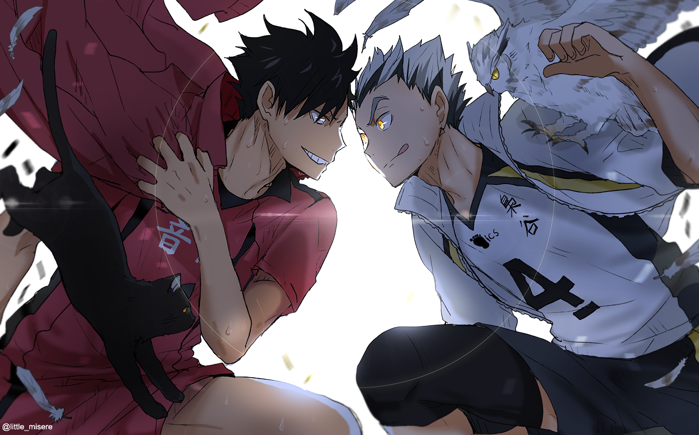

TJKT
SMK MAARIF | SPHERE OF INFLUENCE: NETWORKING
Saya adalah siswa dari SMK Maarif, kelas XI TJKT 2. Saat ini saya mendalami bidang Teknik Jaringan dan Komputer (TJKT), mulai dari perakitan komputer, instalasi sistem operasi, hingga pengelolaan jaringan. Saya terus berusaha mengembangkan kemampuan dan pengalaman agar siap menghadapi perkembangan dunia teknologi dan menjadi pribadi yang lebih kompeten di bidang IT.
- IT